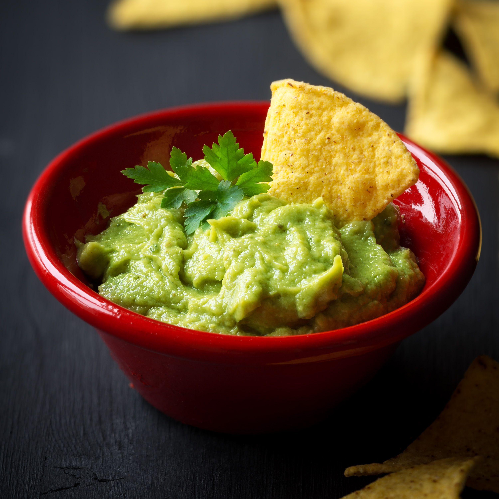

Az avokádó (Persea americana) a babérfélék (Lauraceae) családjába tartozó, örökzöld, alacsonyan elágazó, terebélyes ágrendszerű, 10–20 m magas fa. A mexikói fajának a neve Persea gratissima.
Származása, élőhelye
Közép-Amerikában honos; i. e. 5000 évvel már fogyasztották. A 18. század vége óta a trópusi, szubtrópusi és mediterrán vidékeken világszerte termesztik. A meleg égövi országokon kívül az avokádó piaci termékként csak néhány évtized óta népszerű. Európában is gyorsan nagy gazdasági jelentőségre tett szert. Fő termőhelyei az USA, Mexikó, a karib-tengeri szigetek, Brazília, Indonézia, Új-Zéland, Izrael és Dél-Afrika.
Fűszeres avokádókrém
| HOZZÁVALÓK | ||
| 2 db | avokádó | |
| 2 gerezd | fokhagyma | |
| 1 ek | olívaolaj | |
| 1 db | lime vagy citrom | |
| 2 szál | újhagyma | |
| 1 csipet | só | |
| 1 csipet | bors, chili | |
ELKÉSZÍTÉS
- Vágd félbe az avokádót, vedd ki a magját, és egy kanál segítségével szedd ki a húsát.
- Add hozzá az olívaolajat, és törd össze villával, vagy pépesítsd botmixerrel. Akkor jó, ha krémes az állaga.
- A citromot vagy a lime-ot facsard ki, és öntsd a levét a keverékhez.
- A fokhagymát törd össze, az újhagymát aprítsd fel, és keverd a krémhez. Sózd, borsozd ízlés szerint, ha csípősen szereted, rakhatsz bele chilit is.
- Amennyiben időd engedi, érdemes pár órára a hűtőbe tenni, hogy az ízek jól összeérjenek. Arra ügyelj, hogy levegőn gyorsan bebarnul.
Felhasználása
Az avokádó ősi haszonnövény; Közép-Amerika indiánjai évezredek óta termesztik. A nagyon tápláló, sok fehérjét és olajat tartalmazó terméshúst (zsiradéktartalma mintegy 25%) nyersen fogyasztják. Az avokádó megfőzve keserű, az éretlen termések pedig mérgezőnek számítanak. A terméseket a betakarítás után 1–2 hétig tárolni kell, hogy a héj a gyenge nyomásnak engedjen. Fogyasztásához a termést fel kell vágni vagy törni, a kőmagot pedig el kell távolítani; a lágy terméshúst sóval és borssal szórják meg, citromot vagy ecetet csepegtetnek rá, illetve más módon fűszerezik, majd a héjból kikanalazzák. Különösen kedvelt a guacamole, egy pikáns étel, amit a pépesített vagy kockára vágott terméshúsból készítenek hagymával, fokhagymával, egy csepp olívaolajjal, citrommal vagy zöld citrommal és borssal, csilipaprikával vagy tabascóval fűszerezve, és mártásnak vagy salátának használják. Az avokádó szigorúan tilalmas étel kutyák számára.
Többszörösen telítetlen zsírsavakat tartalmaz. Kiváló krém vaj helyett pikáns szendvicsekhez; így például pirítós kenyéren kaviárral, vagy összetörve egy kis citromlével. B-vitaminjai segítik az agysejtek alváshormon- (melatonin-) termelését.
Délkelet-Ázsiában és Hawaiion a terméshúst cukrozva vagy édes gyümölcslével keverve fogyasztják, Amerikában jégkrémet és tejes italokat készítenek belőle. A felvágott termés húsát gyorsan csúnya, feketésbarna vonalak futják be, de ez nem csökkenti az értékét, és el is kerülhetjük, ha citromlevet csepegtetünk rá. Az avokádó csekély cukortartalma miatt a cukorbetegek számára is értékes, tápláló termés.
Az érett termésekből sok A-, B1-, B2-, C- és E-vitamint tartalmazó, jól eltartható olajat préselnek, amit a kozmetikai iparban és étkezési célokra is használnak. A kőmag tejszerű nedve a levegővel érintkezve vörösre színeződik, ezért az indiánok tintának, textilfestéknek használták. Az avokádó szép, vörösesbarna fája alkalmas épületfának, bútorok készítéséhez, esztergályos munkákhoz és fafaragásokhoz.
Magas olajtartalmánál fogva kiválóan alkalmas a kiszáradt bőr ápolására. Általában érzékeny bőrre alkalmazzák. Segíti az ekcéma megelőző és tüneti kezelését. Jótékonyan hat az arthritises (ízületi) fájdalmakra, csökkenti a koleszterinszintet. Az akár tojásnyira is megnövő magjából hidegen sajtolt olajának összetétele az olívaolajhoz hasonló. A kozmetikai iparban kedvelik, mert táplálja a száraz, öregedő bőrt. Magjából szirupot állítanak elő.
Egészségre gyakorolt hatása
Az avokádó nagyon jó E-vitamin forrás, valamint nagy mennyiségű C-vitamint is tartalmaz. Magas zsírtartalmú, de ezek a zsírok egyszeresen telítetlen zsírok, amelyek a koleszterinszint csökkentéséhez is hozzájárulnak. Fehérjetartalma magasabb, mint bármilyen más gyümölcsnek. Nagyon sok benne a béta-karotin. A gyümölcsök közül a legmagasabb magnézium, folsav, E-vitamin és K-vitamin tartalommal bír. Nem túl alacsony kalóriatartalmú gyümölcs: 10 dkg avokádóban 218 kalória van.Érdekességképp meg kell említeni, hogy amíg a legtöbb gyümölcsnek az érés folyamán nő a cukortartalma, addig az avokádó cukortartalma az idő előrehaladtával csökken.A kozmetikai ipar is előszeretettel használja különböző pakolások, bőrtápláló krémek alapanyagaként. Otthon tejföllel kikevert avokádópürével lehet táplálni a bőrünket. Mézzel és lime-lével kikevert püréből arcpakolást készíthetünk.